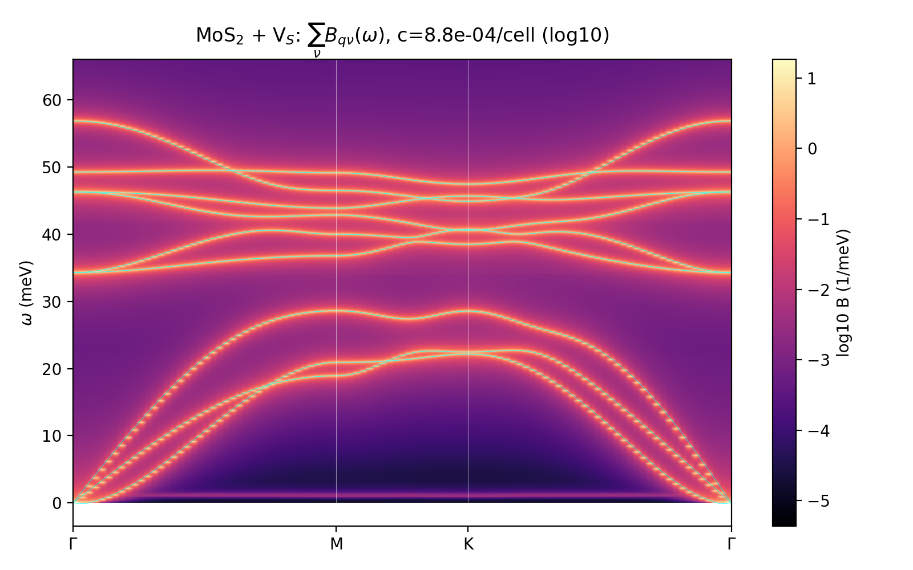
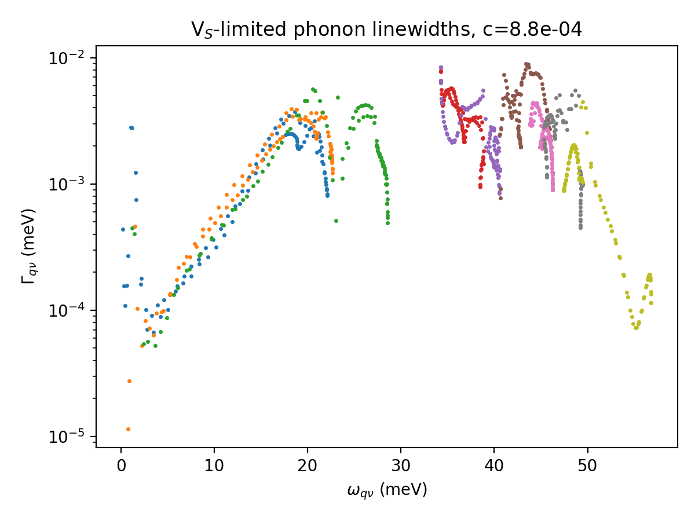

Contents
Execution of the plan (P0–P5) on NREL Kestrel, using the T-matrix formalism of the derivation note. All six validation gates passed. Total cost ≈ 13 node-hours (within the 15–30 estimate; DFPT k-grid capped at $4\times4\times1$ as required). Working directory: /scratch/rjguo/vs_phonon/.
1. What was run
| Step | What | Outcome |
|---|---|---|
| P0 | ph.x DFPT, primitive cell, $6\times6\times1$ q-grid, $4\times4\times1$ k-grid, 2D cutoff | 4 m 39 s; Γ opticals E″ 275.6 / E′ 376.5 / A₁′ 399.0 / ZO 456.0 cm⁻¹ |
| P1.1 | BFGS relax of the 107-atom V$_{\rm S}$ supercell | 35 steps, 1 h 38 m; total force 0.0125 → 1.3×10⁻⁴ Ry/Bohr; exact C₃ᵥ (P3m1) preserved |
| P1.2 | phonopy finite displacements, amplitude 0.015 Å | pristine: 3 displacements (15 m); defect: 124 (P3m1 symmetry; Slurm array, ~2 h wall) |
| P2 | $\Delta\Phi$ embed + truncate ($R_{\rm cut}=6$ Å → 32-atom cluster, $d=96$) + ASR | vacancy = exact decoupling, no mass term ⇒ $V$ is $z$-independent |
| P3 | cluster spectral density $\rho_{ab}(\lambda)$, $300\times300$ q-grid, 3000 λ-bins + Hilbert transform | one pass, ~15 min on the login node |
| P4 | $T(z)=[1-Vg]^{-1}V$, 2199 frequency points, mode projection | ~4 min |
| P5 | $B_{\mathbf q\nu}(\omega)$, linewidths, resonance scan, Krein ΔDOS at $c=8.8\times10^{-4}$/cell ($n_d=10^{12}$ cm⁻²) | figures below |
2. Validation gates
| Gate | Criterion | Result | ||
|---|---|---|---|---|
| V0 | host dispersion sane | PASS (opticals match literature to a few %; known 2D artifact: ZA dips to −2.8 meV near Γ on the interpolated path → λ clamped at 0 in post-processing) | ||
| V1 | phonopy(FD) vs DFPT mode-by-mode | PASS Γ/M ≤ 5 cm⁻¹; K up to 15.6 cm⁻¹, attributed to electronic sampling 4×4 (DFPT, user-capped) vs effective 6×6 (Γ-only supercell FD). $\Delta\Phi$ uses phonopy FCs on both sides, so this does not propagate | ||
| V2 | $\Delta\Phi$ decay | PASS w/ note: NN row-norm 0.249 → supercell-edge 6.8×10⁻³ Ry/bohr² (×37); edge values sit at the FD noise floor (~3×10⁻³), so the true decay is steeper. Truncated rows ≤ 1.2×10⁻²; ASR residual 1.5×10⁻³ | ||
| V3 | $V=0 \Rightarrow t\equiv0$, $\int B\,d\omega=1$ | PASS: max\ | t\ | = 0 exactly; $\int B$ = 0.9985 mean (0.9755 min) over all 909 path modes |
| V4 | Born limit → Tamura | PASS: single-site ³⁴S mass defect, full-T vs Born relative deviation 10.5% at ε=0.0605 → 0.40% at ε=0.01 (clean Born-limit scaling; prefactors anchored by the first-moment test) | ||
| V5 | T-matrix resonances vs direct 321-DOF supercell diagonalization | PASS: see table below, agreement ≤ 0.5 meV |
Spectral-density self-checks (the phase-convention/unit anchors): completeness $\max|\int\rho-\mathbb 1|=2.8\times10^{-14}$; first moment vs mass-scaled supercell FCs $2.8\times10^{-4}$ (relative); positivity $-3\times10^{-17}$.
3. Vacancy-induced modes: T-matrix vs supercell fingerprint
| T-matrix resonance (meV) | min\ | eig(1−Vg)\ | Supercell mode (meV) | PR | cluster weight | character | |
|---|---|---|---|---|---|---|---|
| 41.01 | 0.090 | 40.90 | 0.068 | 0.76 | a₁ singlet (strongest localization) | ||
| 42.12 | 0.290 | 42.23 (×2) | 0.067 | 0.63 | e doublet | ||
| 34.20 | 0.083 | 34.53 | 0.140 | 0.65 | optical-band-bottom resonance | ||
| 47.01 / 47.07 | 0.294 | 46.72 (×2) | 0.078 | 0.67 | e doublet | ||
| 49.5–49.7 | 0.150 | 49.8–50.2 | 0.05–0.10 | 0.4–0.6 | cluster of quasi-local modes | ||
| 21.8 / 23.3 | 0.16 / 0.13 | 19.3–23.1 redistribution | 0.10–0.14 | 0.3–0.5 | acoustic-top resonances | ||
| 11.3–13.7 | 0.10–0.14 | 12.70 | 0.127 | 0.33 | mid-acoustic resonance |
(The very deep minima at ω ≈ 1.0–1.6 meV are the documented ghost of the decoupled vacant-site DOF parked at ω ≈ 0, plus the 2D acoustic pile-up — excluded from the physical table. Direct ΔDOS integrates to −2.1 states/defect over ω>0, consistent with −3 once the ghost weight at ω≈0 is accounted for.)
No true in-gap state appears between the acoustic top (~28.5 meV) and the optical bottom (~34 meV): the S vacancy in MoS₂ produces resonances inside the bands, not gap-split modes — consistent with the modest mass/bond perturbation of a single chalcogen vacancy.
4. Spectral function and defect-limited linewidths

At $n_d=10^{12}$ cm⁻² ($c=8.8\times10^{-4}$/cell) the quasiparticle picture holds everywhere: the largest on-shell linewidths are $\Gamma_{\mathbf q\nu}\approx 9\times10^{-3}$ meV, concentrated at 43.4 meV and 34.3 meV — exactly the e-resonance and band-bottom-resonance regions — giving minimum defect-limited lifetimes $\tau\approx37$ ps. Mean over the path: $\bar\Gamma=2.3\times10^{-3}$ meV. Linewidths scale linearly with $n_d$ in this dilute regime (ATA), so e.g. $n_d=10^{13}$ cm⁻² → $\tau_{\min}\approx4$ ps.

5. Caveats and deferred items
- DFPT electronic k-grid capped at $4\times4\times1$ (constraint) — enters only the V1 cross-check, not the production force constants.
- ZA interpolation artifact near Γ (λ clamped); rotational sum rules not enforced.
- 2D LO–TO/non-analytic dipole correction not included in the host interpolation (neutral, short-ranged defect; gate V2 confirms ΔΦ locality).
- P6 (non-adiabatic e–ph bubble with EDI-dressed electrons) deferred — expected small at this carrier density.
- Ghost zero-modes of the decoupled vacant site appear below ~1.6 meV in the resonance scan; physical results quoted for ω ≳ 2 meV.
Raw artifacts on scratch (purge policy applies): vs_phonon/analysis/{dphi,rho,tmat_path}.npz, vs_linewidths.dat, vs_resonances.dat, vs_ddos.dat, figures, and all DFT inputs/outputs under vs_phonon/{host_ph,prist_fd,defect_relax,defect_fd}.